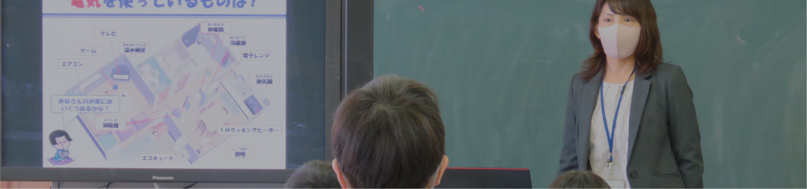
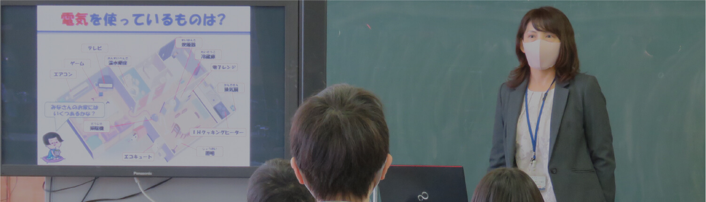
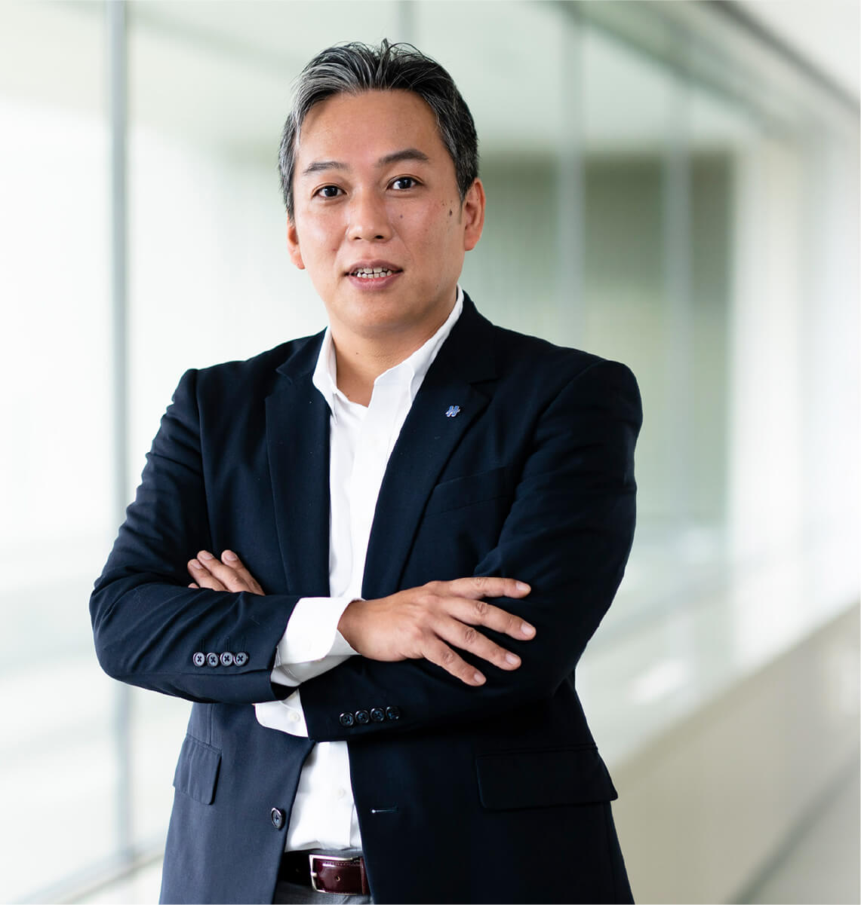
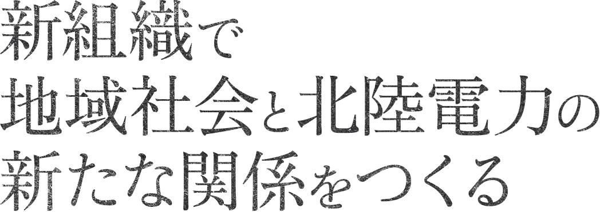
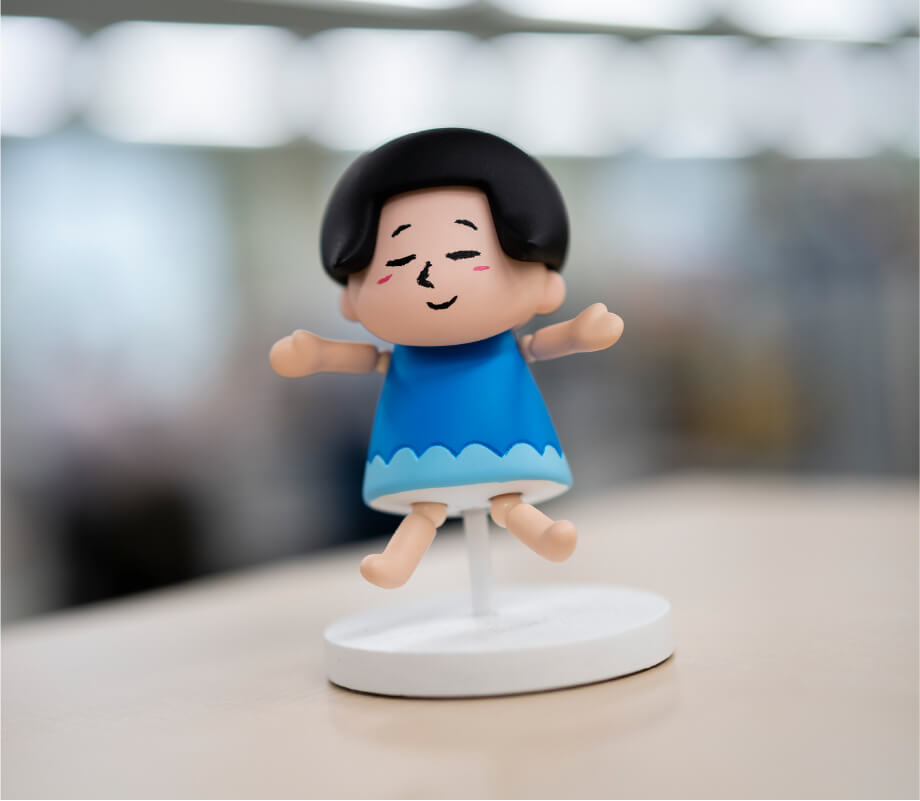
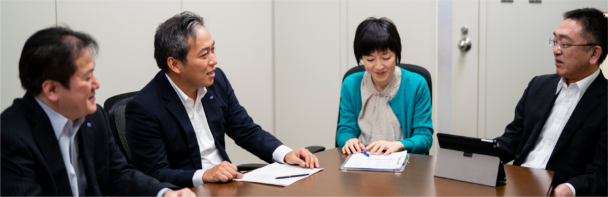
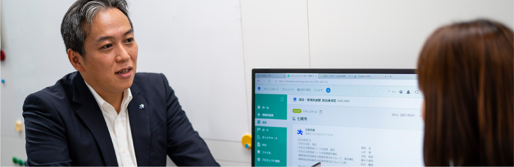
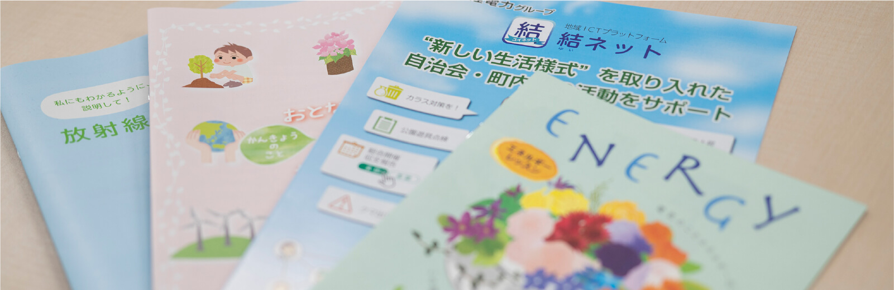
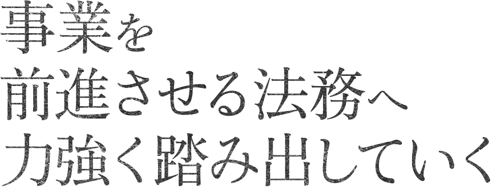
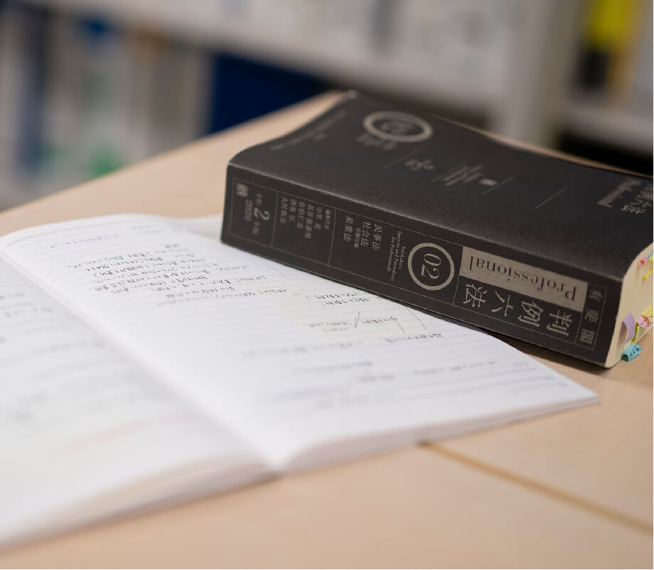

2050年カーボンニュートラル宣⾔や新型コロナウイルス感染症拡⼤を受けた社会の変化等により、4D（脱炭素化・分散化・デジタル化・人口減少）の動きが加速するなど、私たちを取り巻く社会環境は大きく変わろうとしています。
北陸地域を事業拠点とする当社が、地域の皆さまに引き続き選択いただくためには、既存の電気事業の枠を超えて社会課題の解決に積極的に取り組み、地域のご期待に応えていくことが大切だと考えています。
地域共創部は、こうした地域対応力の向上などを目的に、「環境部」「地域広報部」「総務部」が統合する形で誕生しました。
環境部門では、カーボンニュートラルをはじめとする環境適合対応への関心の高まりを受け、当社グループの環境保全全般に係る計画策定、環境アセスメント、電気自動車（EV）の普及推進や環境情報の発信，環境教育など幅広い分野の業務に取り組んでいます。
地域広報部門では、地域の皆さまとの双方向コミュニケーションを目的に、事業活動全般にわたるさまざまな情報を発信する「広報活動」と、お客さまからのご意見･ご要望に耳を傾ける「広聴活動」に取り組んでいます。また、新しい時代における地域共生の取り組みについて、地域のニーズを踏まえながら対応しています。
総務部門では、社内の各部門がお互いに連携を取りながら業務を円滑に遂行できるよう、さまざまな支援・調整を行い、サポートしています。株主総会の運営をはじめ、社内の建物設備等の環境整備、自然災害や犯罪等に備える防災・危機管理業務、法的問題の調査・解明、訴訟対応、コンプライアンス推進、株式事務やIR（株主・投資家向けの広報活動）など、多岐にわたる業務に取り組んでいます。



環境・地域共創部 地域・エネルギー広報チーム在原 真慈
入社 / 2003年
経営学部卒業
2018年7月 人事労務部 秘書チーム 副課長
2021年7月 環境・地域共創部 地域・エネルギー広報チーム 課長
経歴は取材時点のものです

 歩んできたキャリアは？
歩んできたキャリアは？
北陸電力は子どもの頃から親近感を抱いていた会社です。入社後は、地域貢献活動の企画や報道対応などの広報分野を中心に歩み、燃料部門での原子燃料関連業務や秘書業務にも携わりました。また、当社のキャリアでは珍しいかもしれませんが、電気事業連合会に二度出向し、全国の電力会社の方々と一緒に仕事をする貴重な経験もできました。現在は、新設部署である環境·地域共創部において、地域対応業務に携わっています。
 現在の仕事、
現在の仕事、
プロとして意識していることは？
環境・地域共創と聞いても、みなさんはなかなかピンとこないかもしれません。総務部、環境部、地域広報部を統合してできた部門で、地域・エネルギー広報チームは新しい形での地域社会との関わり方、企業広報を探求していくために立ち上げたチームです。社会の環境が変わっていく中で、地域のみなさまは北陸電力になにを求めているのか、その期待にどのように応えていけるのか、そのような問を根底に、地域ICTプラットフォーム構築をはじめ多様な施策を進めています。ゼロベースから手探りで進めていくことが多い業務ですが、私が大切にしているのは、「挑戦したことの後悔はするな。その結果への悔いは残せ」との姿勢です。北陸電力は挑戦に寛容な会社です。失敗を多く経験することが成長や成功につながっていくと考え、組織を牽引しています。

 これから挑みたいことは？
これから挑みたいことは？
チーム発足時から、地域でのコミュニケーションを担うのだから北陸電力のファンを増やそう、既存の業務にとらわれずに本当に必要な仕事をしていこうと取り組んできました。この姿勢をより強固にしていける組織体制構築に挑戦していきたいと考えています。個性や能力の異なる多様なプロフェッショナルがはつらつと働けることこそが、これからの北陸電力の成長エンジンとなっていくと考えています。いわゆる旧態依然としたつまらない会社となってしまうのか、それともダイバーシティに富んだメンバーが自由闊達に働ける会社となるのかは、私たちのような管理職社員にかかっています。自分自身の学びや経験、人生を伝え、どこよりも力のある組織を目指していきます。
 学生へメッセージを
学生へメッセージを
10年後、20年後の社会を見据えた北陸電力の新たなあり方を実現するためには、力強い感性をもったみなさんのアイデアや行動力が必要です。社会人になるからといって、そこに遠慮は必要ありません。多様な社会であるからこそ、ともに個性を活かしてがんばりましょう。


各支店と打ち合わせ
現場の声が、本店にとってなにより大切なものです。日々、お客さまと接している各地域の支店と打ち合わせを行い、地域における課題や対応アイデアについて意見交換します。現場のフィードバックをもとに、施策内容の検討につなげます。

自治体との包括連携協定に関する検討
自治体と官民連携で取り組む包括連携協定に関して検討を実施。安全・安心、環境エネルギー、産業・観光振興、定住人口確保など幅広いテーマを扱い、地域課題の解決に取り組みます。

地域向け新サービス企画会議
電力ビジネスを基盤に、さらなる付加価値を提供する新サービスを企画しています。営業本部室や事業開発部など、部門を超えたメンバーと連携しながら、検討を進めています。
自治体説明資料の作成
事業開発部とともに、町内会向けサポートアプリ「結ネット」事業を新たに立ち上げました。持続可能な地域づくりに向け、より多くの白治体に活用いただけるよう責任者として取り組んでいます。

環境・地域共創部 総務・法務室 法務チーム崎田 晴花
入社 / 2016年
法学部卒業
現在に至るまでの経歴
2016年5月 福井支店 営業部 営業担当
2017年7月 営業部 営業総括チーム
2018年7月 電力取引部 需要総括チーム
2019年5月 総務部 法務室 法務チーム
2021年7月 環境・地域共創部 総務・法務室 法務チーム
経歴は取材時点のものです
 入社動機は？
入社動機は？
地元である北陸で暮らし働き続けたいとの気持ちが強くあり、主に北陸地域に絞って就職活動を展開していました。就職活動中に出会った北陸電力社員は、物腰が柔らかい中にも、社会インフラを担うという熱い気持ちを胸に抱いており、その人柄に魅力を感じました。生まれ育った地域に貢献するという使命感や責任感をもった仲間たちに囲まれながら働き、同じ姿を目指したいと考え、北陸電力を志望しました。

 現在の仕事、その魅力は？
現在の仕事、その魅力は？
法務の仕事は法律知識がすべてという印象があるかもしれません。しかし，日々の仕事で関わる相手はほとんどが社内の各主管部であり、それぞれ個別の事情や経緯を抱えています。これら多種多様の事案に対して、主管部と一緒に検討を重ね、最適な回答を導くことが法務チームに求められる仕事です。私の主な担当は、送配電部門における契約書審査と法律相談対応です。技術的な部分も含めた事業の特性や取引先との関係性などの観点を整理したうえで契約を捉え直し、主管部とお互いに知恵を出し合って、契約書や法律相談の内容について検討を進めています。そういったキャッチボールを繰り返しつつ、検討を進めていく過程はときに困難ではありますが、大きなやりがいと魅力を感じる部分です。法務で進めた仕事が巡り巡って北陸地域を照らすかけがえのない一灯につながっていく、その思いで取り組んでいます。
 これからの目標は？
これからの目標は？
電力小売全面自由化による新電力参入やカーボンニュートラル達成に向けた取組み加速など激変する電力業界で、北陸電力社員のひとりとして日々の仕事を大切にしながら、それらの大きな壁を乗り越えたいと思います。前例のない事業では壁にぶつかることもあると思いますが、そのときに縁の下の力持ちとして支えるのが法務の役割です。今後、法務以外の仕事をする機会もあると思いますが、経験を積み重ね、新たな挑戦に力強く踏み出していける人材を目指したいです。
 学生へメッセージを
学生へメッセージを
他電力会社と比べて規模の小さい会社ではありますが、規模が小さいからこそ、若手であっても新しいサービスや電力業界の新制度設計などに関わるチャンスが数多く存在します。社内全体を俯瞰し、各分野のプロフェッショナルと協働して事業を前に進めていく法務の仕事はとてもやりがいのあるものです。北陸地域に貢献したいみなさん、ぜひ一緒に働きましょう。

- 8:40
-
出社、各主管部と連絡
出社し、各主管部からの連絡を確認。契約書の内容審査や法律相談など内容はさまざまです。優先順位と重要度を意識して、迅速な案件対応を進めていきます。
- 10:00
-
契約書審査
契約書の内容審査を進めます。契約書文面のチェックのみならず、法的リスク検証を入念に行い、事業を検討していきます。
- 13:00
-
チームミーティング・勉強会
チーム内で定期的に勉強会を実施。担当によって相談を受ける法律分野も異なり、月日が立つと担当者ごとに知見や実務経験に偏りが出てきてしまうため、チーム全体で連携し、対応能力向上を図ります。
- 15:00
-
法律相談
担当者と検討内容についての打ち合わせを実施。直近では電力サービスの枠を超えた新規事業の相談が多くあり、そこでは法律に加えて、ビジネスモデルやテクノロジーに関する理解が不可欠だと感じています。
- 17:20
-
先輩と相談、退社
依頼を受けている案件について、些細なことでも自らの知識を増やしていけるよう終業前後の時間を有効活用しています。判例や学説について先輩に相談して、この日は帰路につきました。